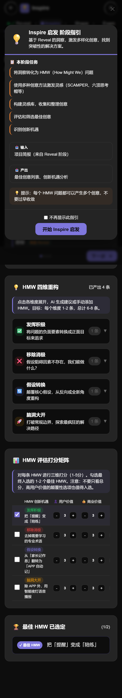

点子天天有，方案拿不出？
让 AI 陪你把点子做完
Eureka Lite 是一个跑在浏览器里的轻量 AI 创新工作台。跟着 RISE 四步法走 19 个任务屏，把一个模糊的点子，一步步变成能讲、能演、能拿去推进的完整方案。
🆓 完全免费
🚫 免下载免注册
🔒 数据存在你本地
🤖 全程 AI 陪跑
▶ 免费开始我的第一个项目

Eureka Lite 是一个跑在浏览器里的轻量 AI 创新工作台。跟着 RISE 四步法走 19 个任务屏，把一个模糊的点子，一步步变成能讲、能演、能拿去推进的完整方案。
创新方法论的书都写得很对，但落到个人，缺的是一个能陪你一步步走完的载体。
脑子里天天冒想法，一想到「怎么验证、怎么讲清楚」就卡住。
没挖到用户真痛点就开做，做出来没人用。
跟别人解释半天「我到底要做啥」，对方还是听不懂。
创新课几千块，设计咨询按小时收费，个人根本玩不起。
每一步都有明确的任务、输入、AI 帮助和产出。你只需要跟着走。
挖出用户真痛点，对齐商业目标，别自嗨
| 你输入 | 场景描述、用户旅程关键发现、FIND 四步的思考 |
| AI 帮你 | 解释现象、建议深层需求、凝练 POV、识别利益相关方、生成商业假设 |
| 你得到 | 项目简报：目标用户、场景、POV 洞察、利益相关方、商业假设 |
| 价值 | 确保你做的是「真需求」，并提前想清楚谁支持、谁反对 |

把洞察变成创意，拓宽思路再收敛
| 你输入 | 勾选的 HMW、收藏的灵感卡、对创意的打分判断 |
| AI 帮你 | 重构 HMW、推荐跨界灵感、交叉生成创意、陪你想（头脑风暴 / 挑刺 / 查资料三种模式） |
| 你得到 | 一批结构化创意 + 一个四维打分选出的最佳创意 |
| 价值 | 从「只有一个想法」到「有一组可选方向」，还知道为什么选它 |

把创意打磨成可落地的方案
| 你输入 | 对拷问问题的回答、方案的功能与边界决策 |
| AI 帮你 | 生成拷问问题、起草概念卡与 6 格故事板（场景化、含情绪） |
| 你得到 | 最小概念方案（功能/特性/边界）+ 用户故事板 |
| 价值 | 3 分钟就能跟人讲清楚「你到底要做啥、不做什么」 |

实测反馈，产出电梯演讲和迭代计划
| 你输入 | 测试计划要素、真实测试发现与反思 |
| AI 帮你 | 起草测试计划、生成电梯演讲、规划 30-60-90 天行动 |
| 你得到 | 电梯演讲 + 迭代计划 + 项目全景图（一页打包全部成果） |
| 价值 | 直接拿去接副业单、找合伙人、投 BP、面试展示 |

它不会替你做决定，但会陪你把每一步想清楚、做出来。
从点子到可接单的方案，省下摸黑试错的时间
测试计划和商业假设，帮你少走弯路
全景图 + 电梯演讲，拿得出手的思维证明
痛点、方案、假设、计划，一页打包给投资人